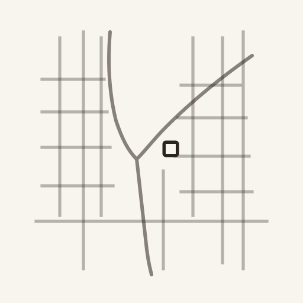

はじまり
名前を知って、見なくなった駅
子どもに「あれは鳥だよ」と言葉を教えたその日から、子どもはもう、あの鳥を見なくなってしまいます。
── ジッドゥ・クリシュナムルティ
電車の窓に、知らない駅名が何度も流れます。私はその名前を読み、それで分かったつもりになって、降りません。
名前だけが残り、その土地の姿を、私は一度も見ていない。駅は、私にとって存在しないもののようになっていました。
なにができるか · 01
ホームに、一度降りる
ドアが開く。知らない駅のホームに、私は一度降りる。次の電車まで、まだ少し時間がある。
このアプリを開いて、いまいる駅を確かめる。まず届くのは、この土地にまつわる物語のゆかりがひとかけら。ここから、空っぽだった駅名が散歩道へと変わっていく。

なにができるか · 02
名前の奥から、声が聞こえる
改札を出て、イヤホンをつける。散歩道の案内を開くと、この土地の成り立ちと、いまの空気を、声で読み上げてくれる。
スマホはポケットにしまって、私は顔を上げる。聴いているうちに、ただの文字だった名前に、目の前の川や坂が重なっていく。

なにができるか · 03
歩いたところが、道になる
地図をひとつ確かめて、少し回り道をする。最短で急がなくてよい。橋や田畑の道、境内や川辺など、無駄に見える寄り道こそが、このアプリの魅力です。
見たことがあるようで、見たことのない角を曲がり、駅へ戻る。歩いたぶんだけ、名前は散歩道になっていく。

使い方

同じ名前が、違って見える帰りの電車で、私はその駅名をもう一度読む。同じ名前なのに、もう空っぽではない。そこには、私の歩いた散歩道がある。
-
01
知らない駅に降りる
現在地から探すか、気になっていた駅名を入れる。
-
02
物語のゆかりを読む
土地にまつわるひとかけらを読む。ここまでは無料。
-
03
散歩道を開く
コインを1枚使って、徒歩圏の散歩道の案内をつくる。一度つくった駅は端末に残り、開き直しにコインはいらない。
-
04
聴きながら歩き、駅へ帰る
土地の歴史と今を耳でたどり、無駄な寄り道をして同じ駅へ戻る。
Lagado · 見知らぬ駅